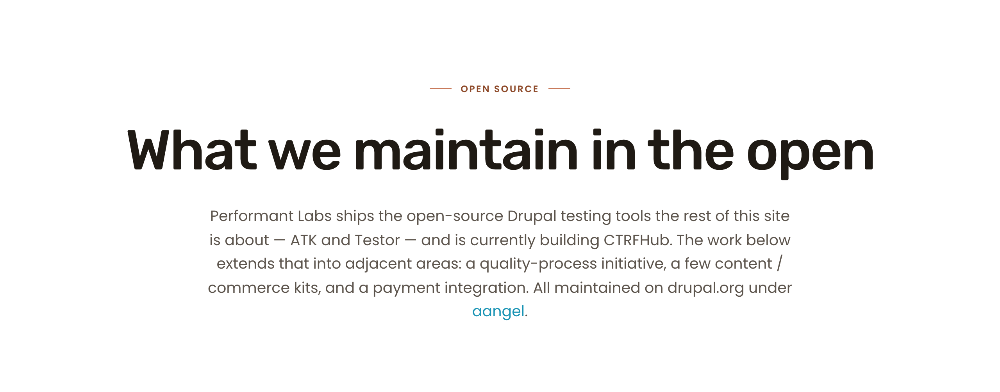
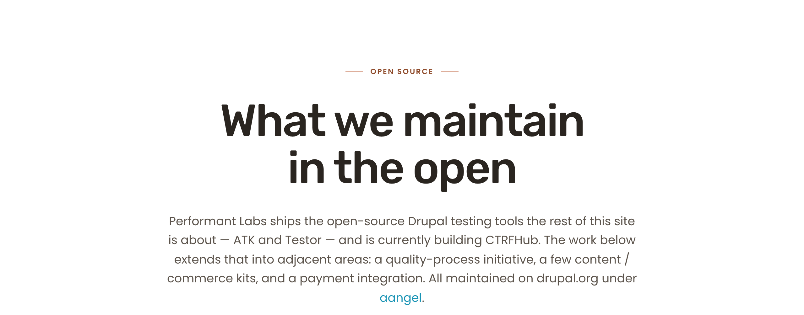
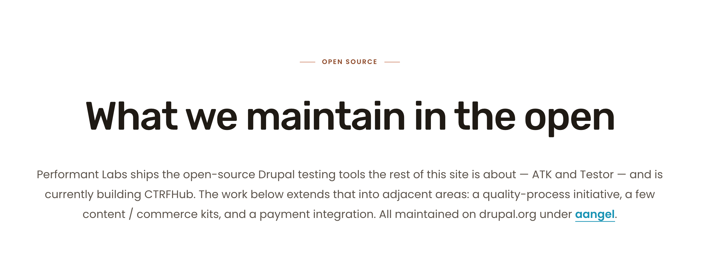
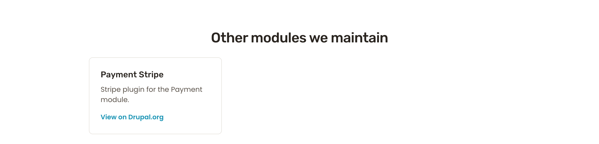
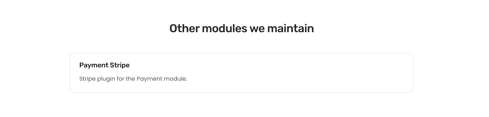

/open-source-projects preview-doc batchS report · 2026-05-13 · branch aa/pl-sprint-17-cycle-2-preview-doc-batch · scoped re-audit
PASS
Four Cycle-2 fixes all landed cleanly in the post-fix preview. Each fix is visible in side-by-side pre/post-fix preview comparisons below. The live↔post-fix-preview residual delta is dominated by sitewide carry-forward issues that Cycle 2 explicitly did not touch (card-image placeholder height, body-lg drift, CTA chrome, footer richness). No out-of-scope regression. The two known carry-forward items (orphan-word "contributions" at 375; CTA chrome F-NEW-4) are confirmed still present and untouched.
Jump: Summary What the fixes did Hero @1280 §D Other modules @1280 DSSIM tables Carry-forward checks
Lower DSSIM = closer match between post-fix preview and live. Whole-section. Compare against Cycle 1 baseline DSSIM in the third column to see the per-section change.
| Viewport | Section | C1 baseline live↔preview DSSIM | C2 post-fix live↔preview DSSIM | postVsC1 preview DSSIM (fix signal) |
|---|---|---|---|---|
| 1280 | hero | 0.192 | 0.195 | 0.088 |
| 1280 | testing-tools | 0.189 | 0.188 | 0.017 |
| 1280 | drupal-qa | 0.201 | 0.201 | 0.015 |
| 1280 | other-modules | 0.151 | 0.151 | 0.014 |
| 1280 | closing-cta | 0.162 | 0.162 | ~0 (untouched) |
| 1280 | footer | 0.178 | 0.178 | 0 (untouched) |
| 768 | hero | 0.225 | 0.225 | 0.001 (768 hero already wrapped 2 lines on both; only color changed) |
| 768 | testing-tools | 0.178 | 0.177 | 0.038 |
| 768 | drupal-qa | 0.182 | 0.182 | 0.020 |
| 768 | other-modules | 0.161 | 0.157 | 0.024 |
| 768 | closing-cta | 0.183 | 0.183 | 0.004 (untouched) |
| 375 | hero | 0.251 | 0.252 | 0.001 (375 H1 wraps 3 lines on both; only color changed) |
| 375 | testing-tools | 0.208 | 0.206 | 0.064 |
| 375 | drupal-qa | 0.205 | 0.204 | 0.054 |
| 375 | other-modules | 0.187 | 0.180 | 0.050 |
Reading the tables. Column 5 (postVsC1 preview DSSIM) is the most direct evidence the fixes landed — it measures only the change in the preview file. Hero 0.088 at 1280 is large (H1 wrap + color); testing-tools / drupal-qa / other-modules ~0.015–0.06 across viewports is structural (card title-as-link conversion). The C2 post-fix live↔preview DSSIM (column 4) is roughly unchanged from C1 baseline because the residual deltas are sitewide carries (card-image placeholder height, body-lg drift, CTA chrome) that Cycle 2 explicitly did not touch.
#2A2520 (ink) to #1F1A14 (ink-strong) matching live's sitewide baseline. Visible as a perceptibly darker heading in the post-fix hero crop vs the Cycle 1 baseline crop..hero__inner max-width widened from 920 to 1040 px. H1 "What we maintain in the open" now wraps to 1 line at 1280 matching live (was 2 lines on the Cycle 1 baseline preview)..module-chip with separate "View on Drupal.org" footer link to a full .project-card using the title-as-link pattern. Total .project-card count is now 7, matching live.

H1 changes from a 2-line wrap to a 1-line wrap; color shifts from #2A2520 to #1F1A14. postVsC1Preview DSSIM = 0.088.

H1 wrap matches (1 line both sides). H1 color matches. Residual: subhead body-text wraps 3 lines on live vs 4 lines on preview (sitewide body-lg drift — F-NEW-17-E carry, out of Cycle 2 scope).

Card converted from .module-chip (with separate "View on Drupal.org" link) to .project-card (title is the link). H3 color shifts to ink-strong. postVsC1Preview DSSIM = 0.014.

Content parity achieved (Payment Stripe card present on both with title-as-link). Residual: live places the single card centered/full-width, preview places it in the first column of a 3-up grid. This is a layout-grid distribution behavior that the operator may want to address in a follow-up cycle (advisory only — not regression, not part of Cycle 2 scope).
| Carry item | Status this cycle | Evidence |
|---|---|---|
| F-NEW-17-C — orphan word "contributions" @375 on §C H2 | still present (silent-park, as scoped) | 375 §C crop confirms "contributions" alone on line 2. |
| F-NEW-17-E — closing-CTA chrome (carry F-NEW-4) | still present (silent-park, as scoped) | 1280 closing-CTA crop: preview still uses ghost-pill "Drop us a line" vs live's outline-on-dark + chevron-circle. postVsC1Preview DSSIM for closing-cta = ~0, confirming nothing accidentally fixed. |
| Footer richness (sitewide) | untouched | 1280 footer postVsC1Preview DSSIM = 0. |
| Card-image placeholder height (F-NEW-17-E advisory) | untouched | Visible in §B testing-tools crop: preview placeholder ~140 px square, live area ~290 px tall. Sitewide carry. |
Reproducible via:
Outputs land in docs/pl2/handoffs/screenshots/sprint-17-cycle-2/. Cycle 1 baselines untouched.
{kind=link}
{kind=link}
{kind=link}
{kind=link}
{kind=link}
{kind=link}